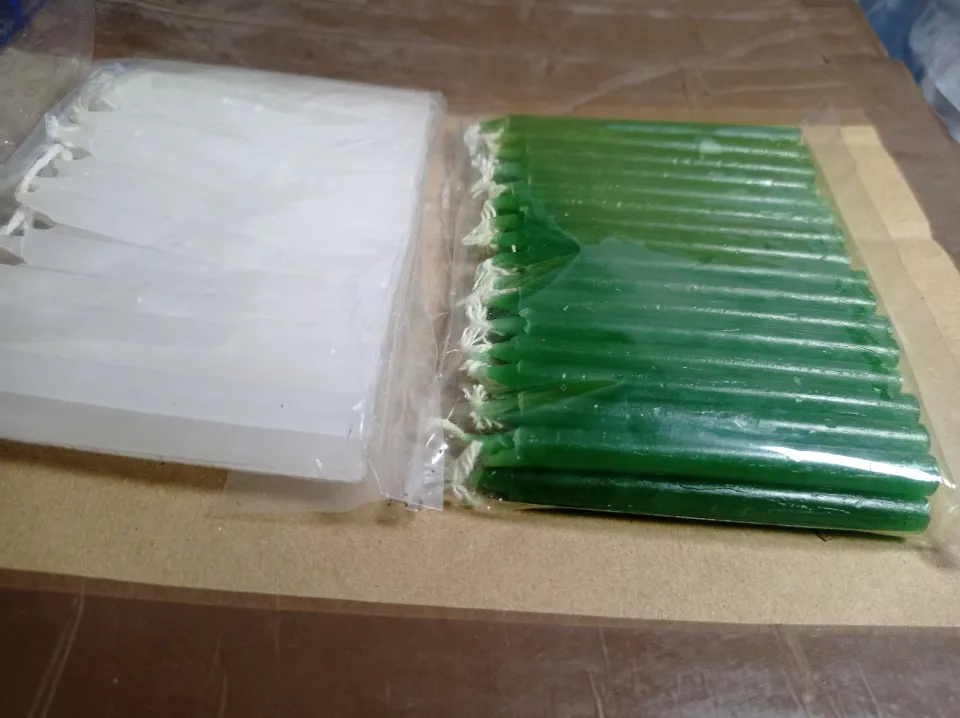
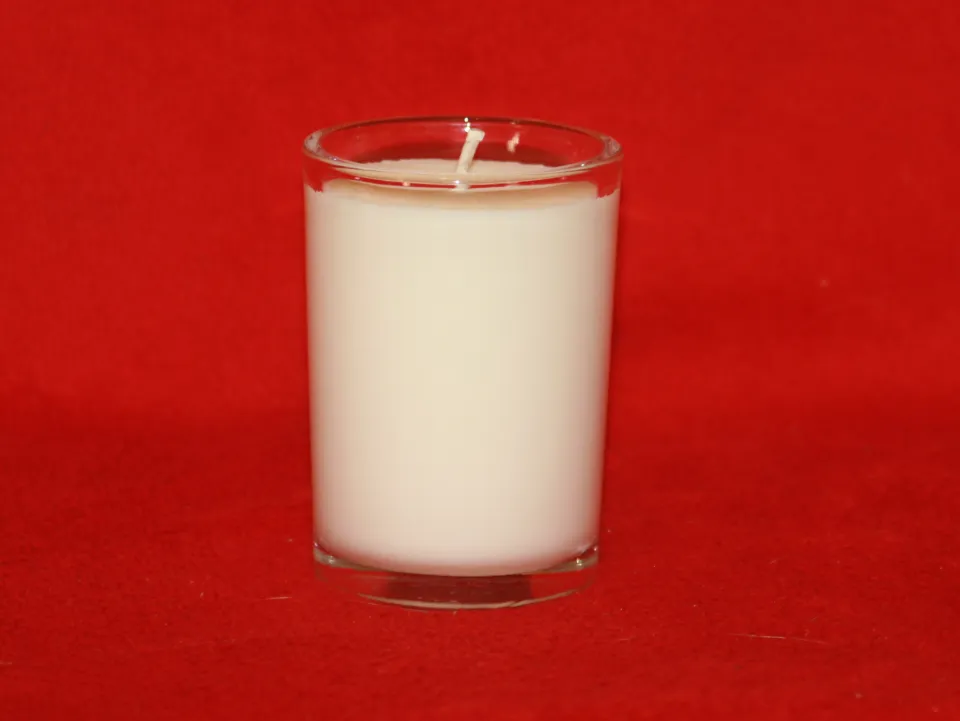
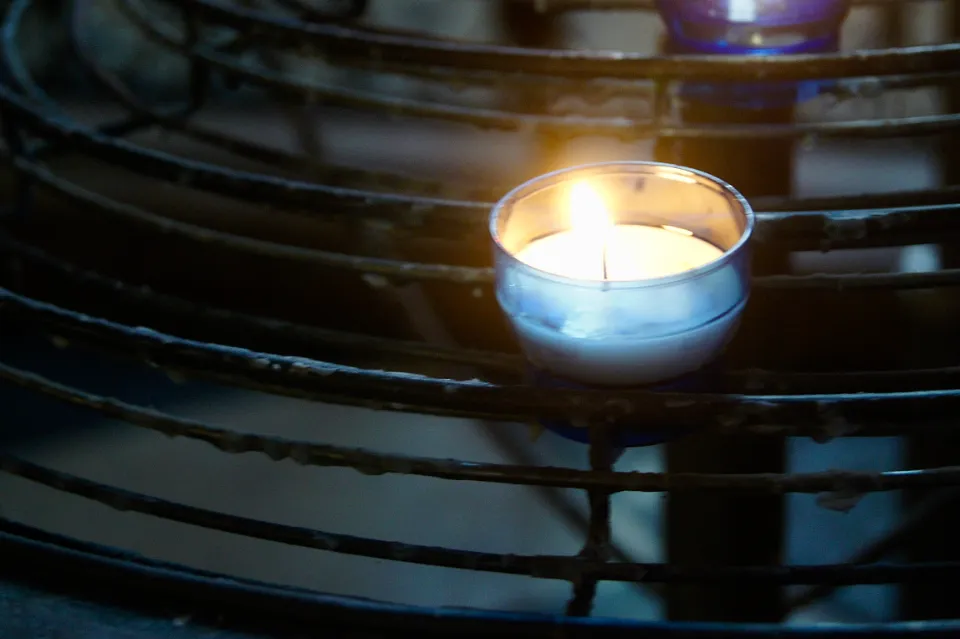
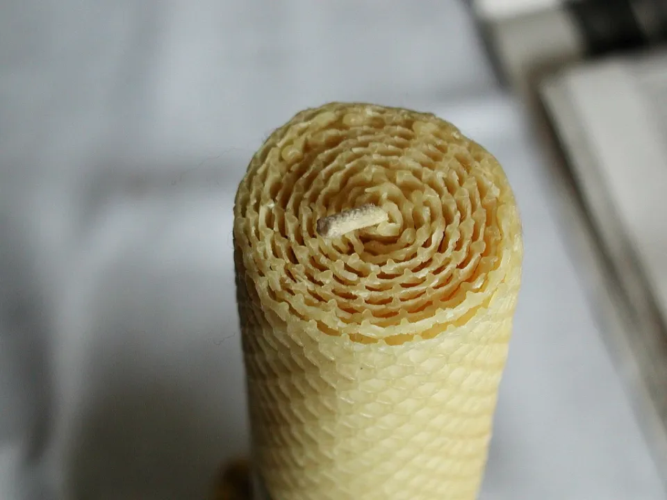
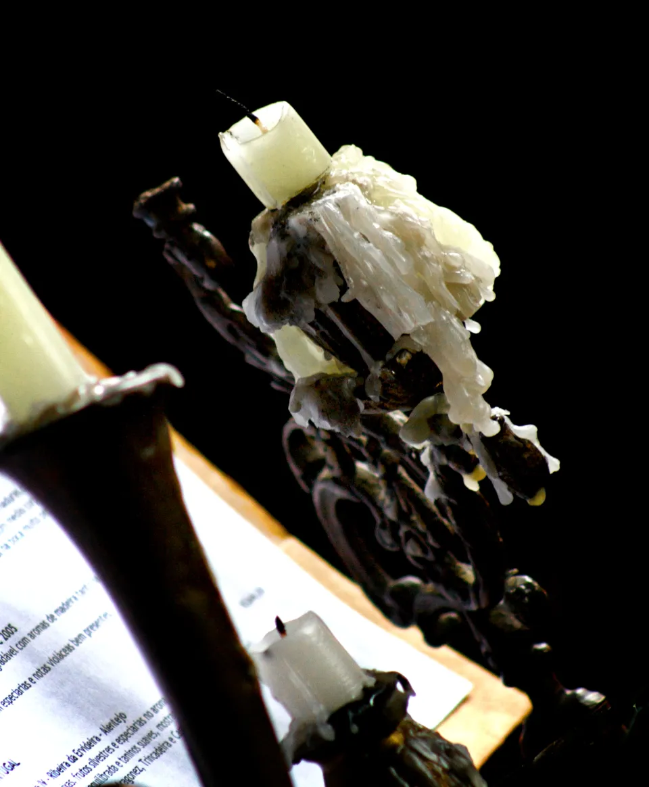
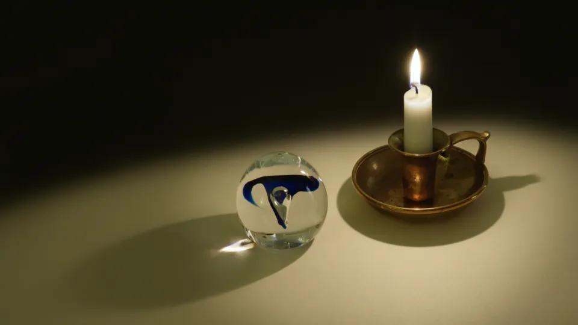
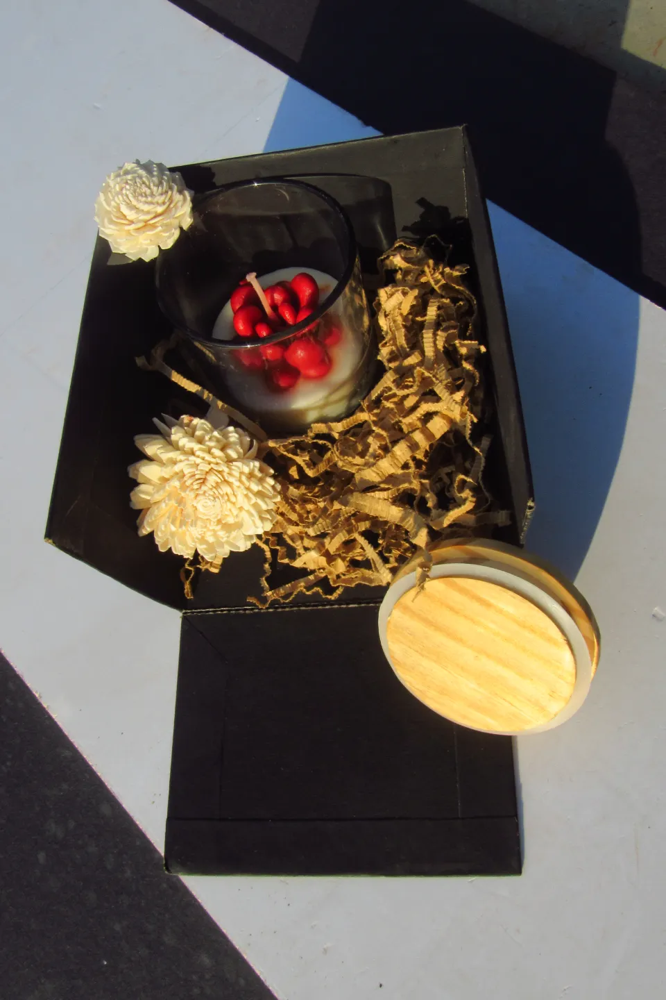

DIY candle-making kits
The craft, ready to open.
Kits that bring the studio’s way of making to your own table, so you can make a candle at your own pace.
Explore our kits
Three ways to begin.
However you come to candle making, a kit lets you start at home. The individual kits in the range will be listed here once confirmed.

After a workshop
Repeat what you learned at the bench — the same steps, at your own pace, at your own table.

Your first candle
A gentle first try at home, before or instead of a workshop.

Making with someone
Share an evening of making with a friend who’s new to it.
Want to know which kit suits you?
Ask us about kitsWhat’s inside the kit
The same essentials as the bench.
Every candle starts with a few honest materials. Our kits are built around the same essentials we work with in the studio:
- What the candle is made of
- What carries the flame
- What holds and shapes it
- What makes it yours
This is an overview, not a contents list.
The exact contents of each kit will be listed here once confirmed. Ask us if you need to know now.

Create at your own pace
Your table, your evening.
No timetable and nobody waiting. Make a candle when it suits you, and take as long as you like over each step.

Set up at home
A clear, heat-safe table is the only studio you need.
Pause whenever you like
Come back to it tomorrow. The craft rewards patience.
Questions welcome
If something isn’t working, get in touch.


A creative gift
Give the craft, not just the candle.
For someone who loves candles, a kit is an invitation to make their own — and to keep making long after the first one.
Ask about kits as a giftExplore or enquire
Ask about our kits.
Tell us what you’d like to make, or who it’s for, and we’ll reply by email.
Send a kit enquiryPrefer to learn in person?
Join a hands-on workshop and make your candle at the studio bench, with guidance at every step.
Explore workshops